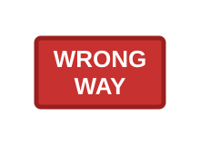
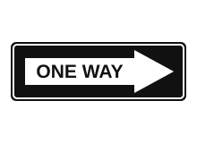

11. What does this sign mean?
Answer: Stop completely before the limit line or crosswalk
A red octagon means stop. Stop before the limit line, crosswalk, or intersection.
Manual: Section 7: Laws and Rules of the Road
California publishes a 80% passing score. Check the length of your actual exam before calculating how many you can miss. Check the official rule.
| Topic | What to know | Source |
|---|---|---|
| Format and passing score | Multiple-choice knowledge test. The DMV publishes an 80% passing score. | Official source |
| Applicant age and documents | The minor instruction-permit path begins at 15½. Bring education documents as applicable and check the DMV's identity and residency requirements. | Official source |
| Retest wait for minors | After a failed knowledge test, a minor must wait seven days, not counting the day of the failure. | Official source |
Last updated:
Checked against: California Driver's Handbook, online edition.
Say what you would do before opening the answer. If you miss a scenario, review the named section in the handbook before trying the second example.
Answer: No. Meet the holding-period requirement as well.
A driver under 18 generally must hold an instruction permit at least six months before scheduling the behind-the-wheel test, unless they turn 18 first.
Manual: Section 2: Getting an Instruction Permit and Driver's License
Answer: No. Check the adult application path for the remaining requirements.
A driver under 18 generally must hold an instruction permit at least six months before scheduling the behind-the-wheel test, unless they turn 18 first.
Manual: Section 2: Getting an Instruction Permit and Driver's License
Answer: No. That is during the restricted period.
During the first year of a minor's provisional license, ordinary driving between 11 p.m. and 5 a.m. is restricted. Exceptions require a qualifying purpose and supporting documentation.
Manual: Section 2: Getting an Instruction Permit and Driver's License
Answer: Whether the school exception applies and whether you have the required signed note.
During the first year of a minor's provisional license, ordinary driving between 11 p.m. and 5 a.m. is restricted. Exceptions require a qualifying purpose and supporting documentation.
Manual: Section 2: Getting an Instruction Permit and Driver's License
Answer: No, not without a qualifying supervisor or exception.
The minor provisional restrictions normally bar passengers under 20 in the first year without a qualifying accompanying driver or a documented exception.
Manual: Section 2: Getting an Instruction Permit and Driver's License
Answer: No. A qualifying accompanying parent changes the result.
The minor provisional restrictions normally bar passengers under 20 in the first year without a qualifying accompanying driver or a documented exception.
Manual: Section 2: Getting an Instruction Permit and Driver's License
Answer: No. The space is reserved.
A blue curb is reserved for qualifying vehicles displaying a disabled-parking placard or plate. A red curb prohibits an ordinary driver from stopping, standing, or parking.
Manual: Section 7: Laws and Rules of the Road
Answer: No. Go to a lawful pickup location.
A blue curb is reserved for qualifying vehicles displaying a disabled-parking placard or plate. A red curb prohibits an ordinary driver from stopping, standing, or parking.
Manual: Section 7: Laws and Rules of the Road
Answer: Change lanes to pass.
Change lanes to pass a bicyclist when possible. If you cannot change lanes, leave at least three feet; if that gap is not safe, wait.
Manual: Section 7: Laws and Rules of the Road
Answer: Wait behind the bicycle until you can pass safely.
Change lanes to pass a bicyclist when possible. If you cannot change lanes, leave at least three feet; if that gap is not safe, wait.
Manual: Section 7: Laws and Rules of the Road
| Cue | First read |
|---|---|
| Red octagon | Stop and check the intersection. |
| Yellow diamond | Look for the warning and prepare for the condition. |
| Orange diamond | Watch for temporary work-zone conditions. |
Full printable road sign reference
Answer: Stop completely before the limit line or crosswalk
A red octagon means stop. Stop before the limit line, crosswalk, or intersection.
Manual: Section 7: Laws and Rules of the Road

Answer: Slow down and give right of way when needed
Yield means slow down and let traffic or pedestrians with priority go first.
Manual: Section 7: Laws and Rules of the Road

Answer: Traffic may not enter from this direction
A Do Not Enter sign means the lane or road is closed to traffic from your direction.
Manual: Section 7: Laws and Rules of the Road

Answer: You are traveling against permitted traffic
Wrong Way warns that you are entering or driving against traffic and should safely stop and turn around.
Manual: Section 7: Laws and Rules of the Road

Answer: A U-turn
A No U-turn sign means drivers may not reverse direction at that location.
Manual: Section 7: Laws and Rules of the Road

Answer: Traffic travels only in the arrow direction
One Way signs show the permitted direction of traffic on that road or lane.
Manual: Section 7: Laws and Rules of the Road

Answer: A posted maximum speed under normal conditions
Speed limit signs show the posted maximum speed under normal conditions unless conditions require slower driving.
Manual: Section 7: Laws and Rules of the Road

Answer: Children may be crossing nearby
School crossing signs warn drivers to slow down and watch for children.
Manual: Section 7: Laws and Rules of the Road

Answer: People crossing the roadway
Pedestrian crossing signs tell drivers to look carefully and be ready to yield.
Manual: Section 7: Laws and Rules of the Road

Answer: Traffic streams will join together
Merge signs warn that vehicles from another lane or ramp will join your lane.
Manual: Section 7: Laws and Rules of the Road
Take the picture quiz to practice answering without seeing the solution first.